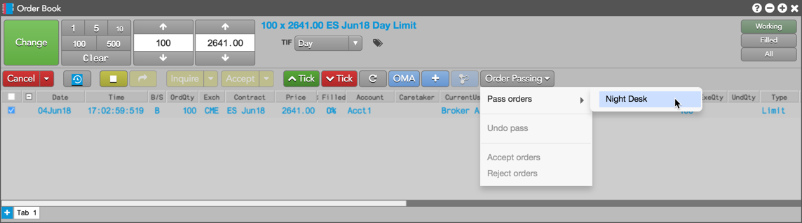
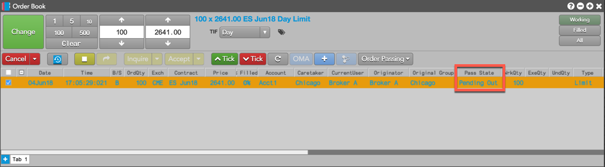
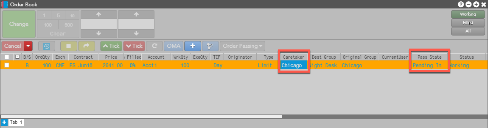
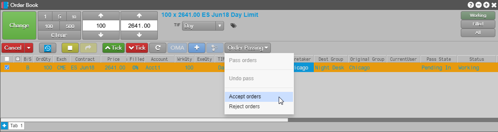
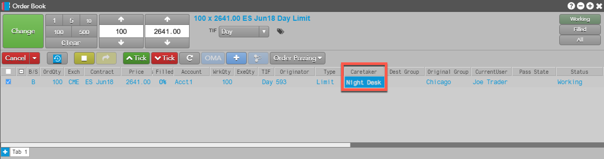
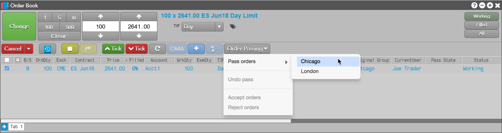
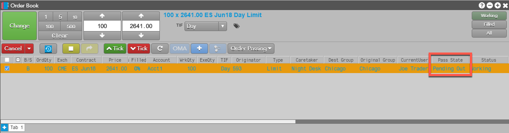
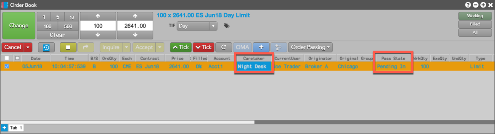
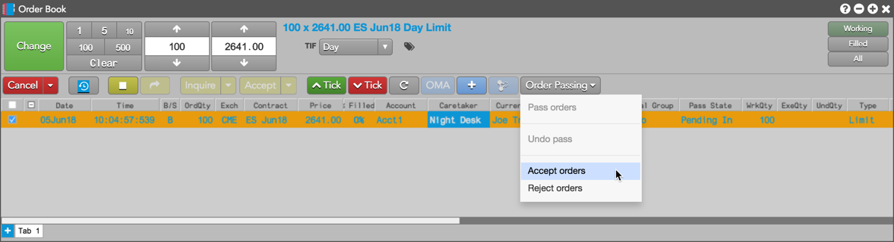
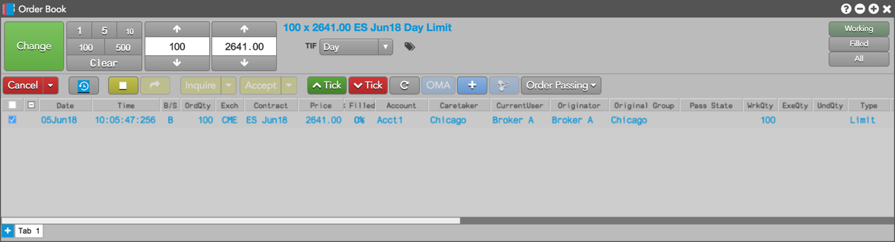

A simple use case for order passing is the use of a 24 hour "night desk" to manage unfilled orders or partially filled orders still working in the market.
In the following example, a sell-side brokerage desk in Chicago executes customer orders during their local trading day, and also operates a separate global support desk (night desk) that is staffed 24 hours a day. At the end of the local session, the Chicago desk passes management and visibility of an unfilled order still working in the market to the night desk, then reclaims ownership of the order when they return to work the next day.
The Chicago group passes a working order to the Night Desk by clicking Order Passing | Pass Orders and selecting "Night Desk".

After the order pass is initiated, the Pass State column shows the order state as "Pending Out" in the Chicago Order Book. The Order Book row is highlighted orange to indicate the order is in a pending pass state.

In the Night Desk user group's Order Book, the passed order appears as "Pending In" in the Pass State column, and the Caretaker column shows "Chicago" as the group currently managing and passing the order.

The Night Desk selects the order and clicks Order Passing | Accept Orders.

After the order is accepted, the Caretaker column displays "Night Desk" as the user group now managing the order.

For the next trading session, the Night Desk clicks the Order Passing button in their Order Book and passes the working order back to Chicago.

The Pass State column now shows "Pending Out" in the Night Desk user group's Order Book. The Order Book row is highlighted orange to indicate the order is in a pending pass state.

In the Chicago Order Book, the Pass State column shows the order as "Pending In", and the Caretaker column shows "Night Desk" as the group currently managing and passing the order.

The Chicago user group clicks Order Passing | Accept orders in their Order Book to reclaim the order.

The order pass is accepted and "Chicago" displays in the Caretaker column.
